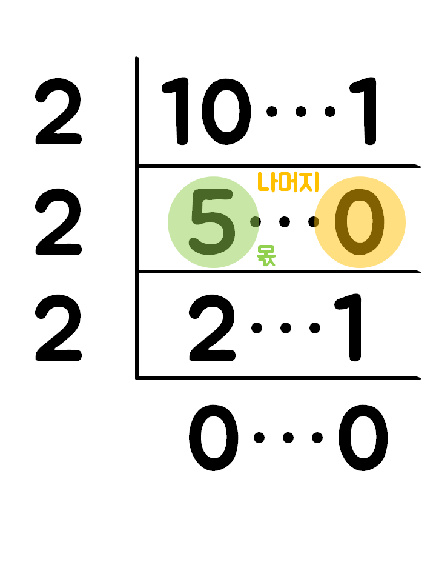

십진수를 이진수로, 이진수를 십진수로
십진수
평상시 일상생활에 사용되는 수체계로, 0~9까지의 숫자를 사용해 수를 표현하는 것을 말한다. 10개의 숫자를 사용하기에 '십진수' 라고 한다.
이진수
컴퓨터가 사용하는 수체계로, 0~1까지의 숫자를 사용해 수를 표현하는 것을 말한다. 2개의 숫자를 사용하기에 '이진수' 라고 한다.
+Plus
16진수
0~f까지의 숫자를 사용해 수를 표현하는 것을 말한다. 주로 색을 나타내는 '컬러코드' 에 주로 사용된다.
| 0 |
1 |
2 |
3 |
4 |
5 |
6 |
7 |
8 |
9 |
a |
b |
c |
d |
e |
f |
십진수를 이진수로 만들기
방법 1
소인수분해를 하듯 수를 나누는데 이때는 무조건 2로만 나눈다. 그리고 나누면서 나머지를 옆에 써주면 된다.
처음 수 오른쪽엔 무조건 1을 쓴다.
계산을 완료한 후, 아래에서부터 위로 읽으면 된다.

10 = 1010
방법 2
해당하는 십진수의 값과 가까워질 때까지 2n을 나열해 본다.
이때, 20은 1로 생각하고 쓴다.
쓴 숫자들 중 더했을 때 해당하는 십진수의 값과 같은 수들을 동그라미 친다.
동그라미가 있는 수 아래에는 1, 없는 수 아래에는 0을 쓴다.
10 = ⑧ 4 ② 1
ㅤㅤ 1⠀0⠀1⠀0
10 = 1010
2진수를 10진수로
...64 32 16 8 6 4 2 1
이중 0에 해당하는 것은 더하지 말고 1에 해당하는 것만 더한다.
1010 = ⑧ 4 ② 1 = 8+2 = 10